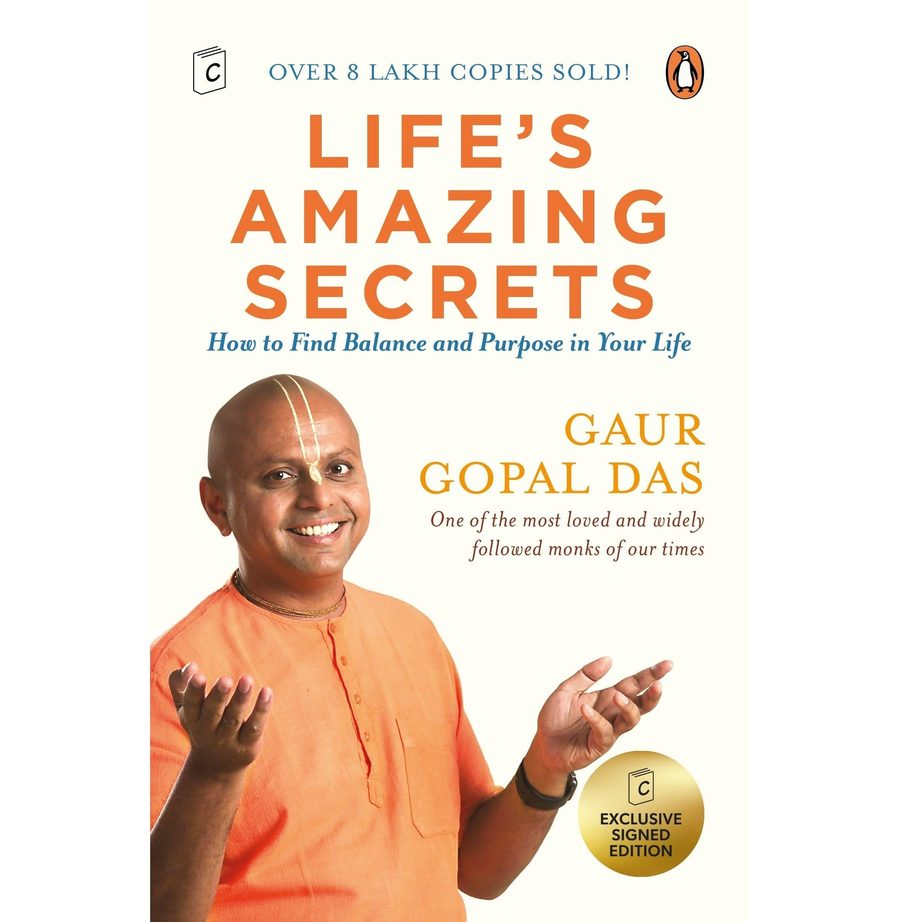

Library › Self-Improvement
Life's Amazing Secrets — Summary & Key Lessons

How to find balance and purpose in your life — the monk's wisdom delivered through one Mumbai car ride.
📖 OPEN THE FULL INTERACTIVE BREAKDOWN →🌐 Read it in Hindi, Hinglish, Gujarati, Tamil & 22 more languages — free, with audio.
💡 The Big Idea
Structured as a single conversation — a drive through Mumbai traffic between the monk and his wealthy, restless friend Harry — the book maps life as a car with four wheels: PERSONAL LIFE (gratitude, mindset, spiritual practice — the driver's own condition), RELATIONSHIPS (forgiveness, sensitive speech, correcting others with care), WORK LIFE (finding your ikigai-like purpose, integrity, handling competition), and CONTRIBUTION (the final wheel that gives the other three meaning — 'the highest purpose'). Das's gift is the delivery: ancient Bhagavad-Gita principles arriving through WhatsApp-era parables, traffic metaphors, and disarming humor. The destination of the drive: balance isn't found; it's built — one wheel at a time.
🧠 The 6 Key Lessons
Lesson 1: The First Wheel: Gratitude Is the Starting Engine
Part 1: Personal Life
The drive begins with Harry's paradox — everything achieved, nothing enjoyed — and Das's diagnosis: an untrained mind scans for what's missing (the negativity default), and no acquisition fixes a scanning problem. The repair is deliberate gratitude: not denial of problems but ACCURATE accounting — the working eyes, the food security, the people who'd take your 2 a.m. call are real line-items the anxious ledger omits. His practices: the daily gratitude log (specific, fresh entries — not recycled generalities), the 'gratitude visit' (tell someone what they meant to you, in person), and perspective anchors (Das's hospital-window stories: the view changes the verdict on the same day). The wheel's deeper spoke: spiritual practice — whatever your tradition, daily stillness connects you to something bigger than the day's scoreboard, and that connection is the suspension system for every pothole ahead.
📖 Example: Das's paper-and-dot demonstration, performed in the car: he draws a black dot on white paper and asks Harry what he sees — 'a black dot' — to which the monk replies: nobody ever says 'a white page.' The dot (the problem) is real; the page (everything… Read the full example →
⚡ Do this: Start the white-page practice: nightly, three SPECIFIC gratitudes (new each day — no repeats allowed), plus one weekly gratitude delivery: tell one person, concretely, what they've meant. Watch the scanner recalibrate in about three weeks.
Lesson 2: The Second Wheel: Speak Sensitively, Correct Carefully
Part 2: Relationships
Das's relationship section centers on the rarest skill: CORRECTING others without crushing them. His four-question filter before any criticism: Am I the right PERSON (do I have the relationship capital?), is this the right TIME (never publicly, never in anger), is my MOTIVE right (their growth, or my superiority?), and is the METHOD right (private, specific, sandwiched in genuine appreciation)? The supporting doctrine: judge nobody's whole story from the chapter you walked in on; practice 'sensitive speech' — words leave the bow like arrows, unreturnable; and forgiveness is self-interest wearing virtue's clothes ('holding resentment is drinking poison and waiting for the other to die' — the Gita's counsel made practical: forgive for your own nervous system). The wheel's alignment check: the people closest to you get your politeness LAST, usually — invert that.
📖 Example: The book's most-shared parable: a boy shouts into a valley, hears the 'insult' echoed back, and complains to his father — who has him shout 'I love you' instead: the valley returns it. Life, Das tells Harry in traffic, is the echo — and Harry's cold war with… Read the full example →
⚡ Do this: Before your next correction, run the four questions — person, time, motive, method — and abort if any fails. And make one first-move this week: the kind word into your own coldest valley, without waiting for the other side to deserve it.
Lesson 3: The Third Wheel: Purpose at Work — the Four Quadrants
Part 3: Work Life
Harry's career question — 'I'm successful; why does it feel empty?' — gets Das's quadrant answer (his version of ikigai): map what you LOVE against what you're GOOD AT; the goal is migrating your center of gravity toward the quadrant where both align, and where the world also needs it. His employment counsel is unusually practical for a monk: you don't need to quit — begin by importing your passion INTO your current role (the accountant who loves teaching trains juniors), build competence patiently (passion without skill is entitlement), and measure success by integrity as much as achievement: 'it is better to fail with honor than to win by cheating' — because work-wheel wobble usually comes not from wrong jobs but from misaligned values ridden too long. Competition gets reframed too: the only comparison that matters is with yesterday's you; lanes exist so swimmers don't drown each other.
📖 Example: Das's swimming-lane story: at a race, a young swimmer keeps glancing at rivals' lanes — and loses precisely the fractions those glances cost; the coach's verdict becomes the chapter's law: 'swim your own race.' The purpose exhibit is the monk's own arc, told… Read the full example →
⚡ Do this: Draw the two-axis map (love × skill) and place your current role's main activities on it. Pick one activity in the love+skill quadrant and negotiate 10% more of your week toward it — no resignation required. Run the integrity audit alongside: where does your work currently tax your values?
Lesson 4: The Fourth Wheel: Contribution — the Rent We Pay
Part 4: Giving Back
The drive's destination: Das tells Harry the first three wheels — personal peace, warm relationships, purposeful work — still leave a car going in circles without the fourth: CONTRIBUTION, 'seva,' selfless service. His argument is engineering, not preaching: the self-obsessed mind is an anxiety machine (its problems fill whatever attention is available); service is the only reliable displacement — helping someone else is the fastest exit from your own head. The forms are deliberately democratized: money is the least of it — skills (teach what you know), time (presence is the premium gift), voice (speak for those unheard), even your struggle itself (your survived pain is someone's survival manual). The book's closing formula, delivered as Harry finally drives toward his father's house: happiness has three levels — pleasure (fades), passion (flows), and purpose (fulfills) — and purpose is always, structurally, about something bigger than yourself.
📖 Example: Das's ice-cream-versus-candle contrast seals it: pleasure is ice cream — delightful, melting, gone; purpose is a candle — it spends itself giving light, and lights other candles losing nothing. His seva exhibits run from the billionaire funding schools he'll… Read the full example →
⚡ Do this: Choose your currency — skill, time, voice, or money — and set up one RECURRING contribution this month (a monthly class, a weekly hour, a standing donation). Then test Das's displacement claim: next anxious spiral, immediately do one concrete thing for someone else, and time how fast the spiral loses altitude.
Lesson 5: The First Wheel Revisited: Gratitude as a Daily Practice, Not a Feeling
Part 2: The Practice
Gaur Gopal Das returns to gratitude because it is the wheel that starts all others: you cannot grow, serve or love well from a foundation of resentment. His practical upgrade: gratitude is not a passive feeling you wait for — it is a deliberate daily inventory. The discipline: each evening, name three specific things you're grateful for, including one you normally take for granted (health, a parent's call, the roof). This practice rewires the brain's default from 'what's missing' to 'what's present'. Gratitude practiced daily becomes the lens through which every other problem looks smaller and every other joy looks bigger.
📖 Example: Gaur Gopal Das tells of a man who lost his job and, through the daily gratitude practice, found himself grateful for the freedom it gave him to reconnect with family — a perspective shift that turned his crisis into the best year of his life. Read the full example →
⚡ Do this: Tonight, write three gratitudes — one of them something you'd normally never think to thank. Repeat for 7 nights and notice the shift.
Lesson 6: The Fifth Wheel: Balance — Work, Family, Health and Spirit
Part 3: The Wheels of Life
The book's final wheel is balance: a life that excels at work while neglecting family, health or spirit is a car running on three wheels — impressive briefly, broken eventually. Gaur Gopal Das's framework: every wheel needs attention, but the order matters — when work and family conflict, family wins, because a career can be rebuilt and a relationship may not. Balance is not equal hours; it is conscious allocation to what actually matters at each season of life. The most successful people he knows are not the ones who balance perfectly — they are the ones who periodically rebalance, auditing their wheels before one deflates.
📖 Example: He shares the story of an executive who, after his child's school play incident (he was the only parent missing), rebalanced his entire career around family — and found his work improved, because the restored home life gave him energy his ambition alone… Read the full example →
⚡ Do this: Rate your five wheels (work, family, health, relationships, spirit) 1–10. Pick the lowest and schedule one concrete action this week — then re-audit monthly.
✅ 5-Step Action Plan
- Nightly white-page practice: three fresh gratitudes; one weekly delivery.
- Run the four-question filter before every correction; make one first-move.
- Map love × skill; shift 10% of your week toward the aligned quadrant.
- Set up one recurring act of seva in your strongest currency.
- Check all four wheels monthly — balance is maintenance, not arrival.
💬 Best Quotes from Life's Amazing Secrets
- “When we speak about others, their absence should not mean their absence from our sensitivity.”
- “Gratitude is not only the greatest of virtues, but the parent of all others.”
- “Seva, or selfless service, is the rent we pay for living on this planet.”
Interactive version: mark lessons as read, listen in your language, share quote cards.